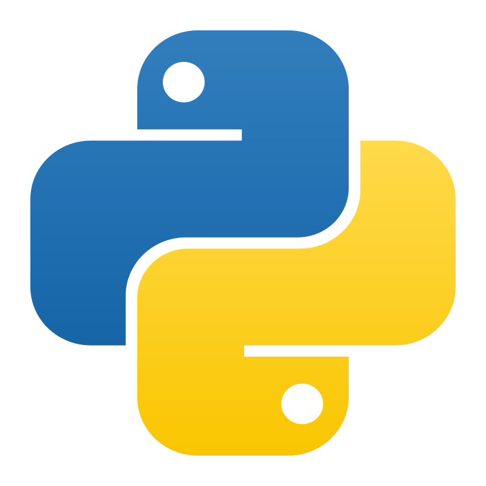

About Me
Java

Python
Spring Boot
AWS
MySQL
Hibernate
Josiah Cooksey
Illinois, United States of America
Software developer who enjoys the algorithmic, puzzle-solving side of programming.
- B.Sc. in Computer Science (completed in 6 months)
- Full-stack development with Java, Spring Boot, & Angular
- Python automation experience
- Enjoys playing the piano
Select Projects
Live Demo
Source Code
Multi-colour Ditherer
Renders images with only a few colours
Supports custom input images and palettes

➝